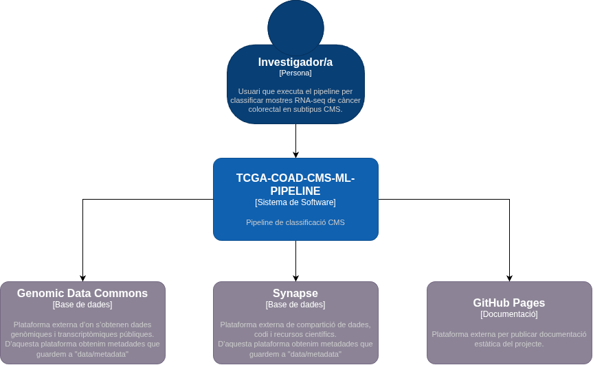
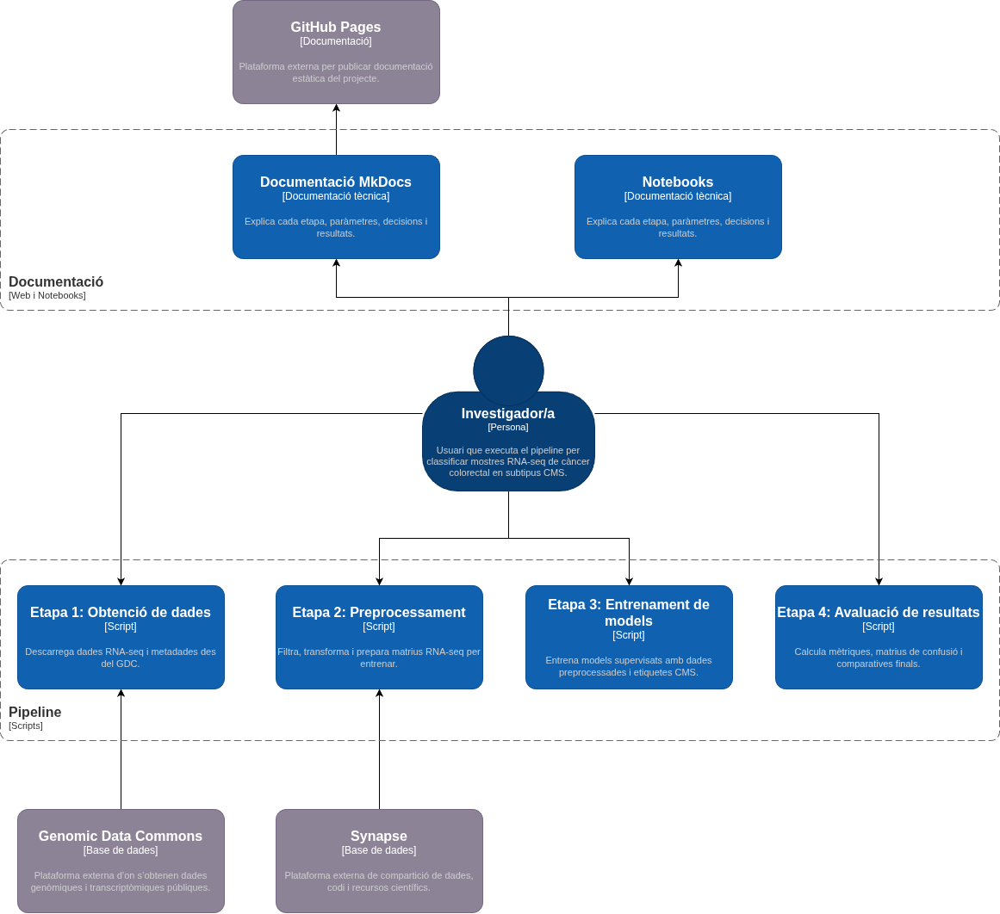
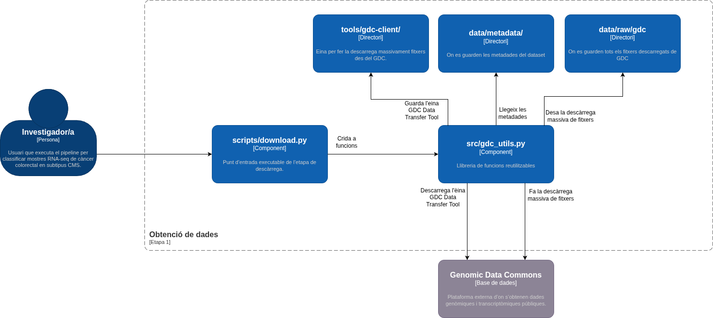
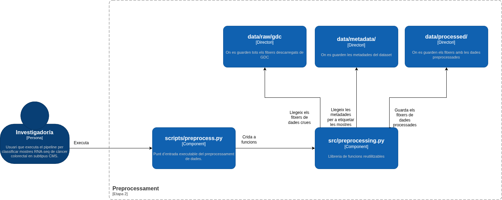
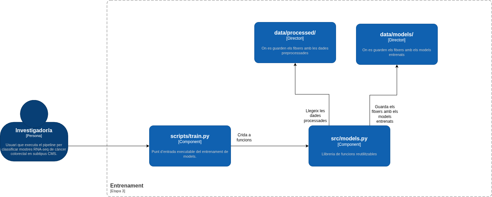
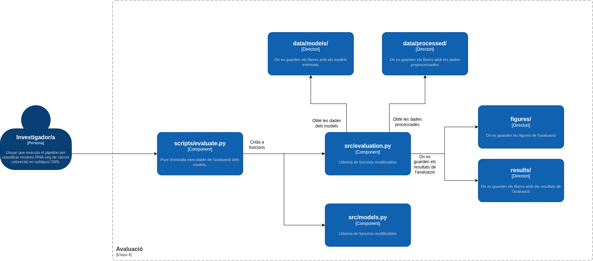

Dades i pipeline
Aquesta pàgina descriu l’origen de les dades, l’estructura del repositori i el funcionament intern del pipeline. També inclou els diagrames C4 que representen el sistema en diferents nivells de detall.
Origen de les dades
El projecte utilitza dades d’expressió gènica RNA-seq de la cohort TCGA-COAD. Els fitxers provenen del Genomic Data Commons i es descarreguen mitjançant un manifest guardat dins de data/metadata/.
El pipeline no treballa amb fitxers FASTQ ni fa alineament de seqüències. Parteix de fitxers STAR-Counts ja quantificats, que contenen comptatges d’expressió gènica per mostra.
Les etiquetes CMS provenen de recursos externs associats a Synapse i es conserven dins de data/metadata/. Durant el preprocessament, aquestes etiquetes s’uneixen amb les mostres RNA-seq per construir el conjunt de dades final.
| Element | Valor |
|---|---|
| Cohort | TCGA-COAD |
| Tipus de dada | RNA-seq |
| Workflow | STAR-Counts |
| Tipus de mostra | Tumor primari |
| Accés | Dades públiques del GDC |
| Etiquetes | Subtipus CMS provinents de Synapse i guardats a data/metadata/ |
Què es versiona i què no?
El repositori només versiona fitxers petits o necessaris per reconstruir el projecte. Les dades grans, els models entrenats i els resultats regenerables queden exclosos del control de versions.
| Ruta | Contingut | Es versiona? | Motiu |
|---|---|---|---|
data/metadata/ |
Manifests, sample sheets i etiquetes CMS | Sí | Permeten reconstruir el dataset |
data/raw/gdc/ |
Fitxers RNA-seq descarregats | No | Són grans i es poden descarregar de nou |
data/processed/ |
Matrius processades | No | Es generen amb preprocess.py |
data/models/ |
Models entrenats | No | Es generen amb train.py |
results/ |
Informes d’avaluació | No | Es generen amb evaluate.py |
figures/ |
Figures i gràfics generats | No | Es generen amb els notebooks o amb evaluate.py |
docs/assets/diagrames/ |
Diagrames utilitzats per la documentació | Sí | Són necessaris per visualitzar correctament la documentació |
Estructura del repositori
tcga-coad-cms-ml-pipeline/
├── data/
│ ├── metadata/ # manifests, sample sheets i etiquetes CMS
│ ├── raw/gdc/ # fitxers RNA-seq descarregats
│ ├── processed/ # dades transformades per als models
│ └── models/ # models entrenats
├── docs/ # documentació MkDocs
├── figures/ # figures generades
├── notebooks/ # exploració i anàlisi interactiva
├── results/ # mètriques i informes d’avaluació
├── scripts/ # punts d’entrada executables
├── src/ # mòduls reutilitzables
├── tools/ # eines externes, com gdc-client
├── environment.yml
└── README.md
La separació entre scripts/ i src/ permet diferenciar els punts d’entrada executables de la lògica reutilitzable. Els scripts orquestren cada etapa del pipeline, mentre que els mòduls de src/ contenen les funcions que poden ser cridades des dels scripts o des dels notebooks.
Visió general del pipeline
El pipeline s’executa en quatre etapes productives:
1. Descàrrega scripts/download.py src/gdc_utils.py
2. Preprocessament scripts/preprocess.py src/preprocessing.py
3. Entrenament scripts/train.py src/models.py
4. Avaluació scripts/evaluate.py src/evaluation.py
L’exploració amb notebooks no es considera una etapa productiva del pipeline. És una etapa d’anàlisi que ajuda a validar les dades i interpretar resultats, però no modifica els fitxers que entren als models.
Contracte de les etapes
| Etapa | Entrada | Procés | Sortida |
|---|---|---|---|
| Descàrrega | Manifest GDC a data/metadata/ |
Localitza o instal·la gdc-client i descarrega els fitxers RNA-seq del GDC |
Fitxers RNA-seq a data/raw/gdc/ |
| Preprocessament | Fitxers raw, metadades i etiquetes CMS | Construeix la matriu, filtra dades, uneix etiquetes CMS, separa train/test i transforma valors | X_train, X_test, y_train, y_test i logs a data/processed/ |
| Entrenament | Dades processades de train | Entrena Logistic Regression, Random Forest i SVM | Models .joblib i training_log.json a data/models/ |
| Avaluació | Models entrenats i dades de test | Calcula mètriques, matrius de confusió i gràfics | Informe a results/ i figures generades a figures/ |
Arquitectura C4
El model C4 s’utilitza per representar el projecte en tres nivells: context, contenidors i components. El nivell de context mostra el sistema i els elements externs; el nivell de contenidors mostra les parts principals del projecte; i el nivell de components mostra l’estructura interna de cada etapa del pipeline.
Nivell 1: context del sistema

El diagrama de context representa el pipeline com un sistema de software complet. L’actor principal és l’investigador o investigadora, que executa el pipeline per classificar mostres RNA-seq de càncer colorectal en subtipus CMS.
El sistema es relaciona amb tres elements externs. El Genomic Data Commons proporciona els fitxers RNA-seq i les metadades de descàrrega. Synapse proporciona recursos externs relacionats amb les etiquetes CMS. GitHub Pages publica la documentació tècnica del projecte.
| Element extern | Funció dins del projecte |
|---|---|
| Genomic Data Commons | Proporciona els fitxers RNA-seq i les metadades de descàrrega |
| Synapse | Proporciona recursos externs relacionats amb les etiquetes CMS |
| GitHub Pages | Publica la documentació tècnica generada amb MkDocs |
Nivell 2: contenidors

El diagrama de contenidors amplia el sistema i mostra les parts principals del projecte. Dins del pipeline apareixen quatre etapes productives: obtenció de dades, preprocessament, entrenament i avaluació.
També s’hi mostra la documentació com un bloc separat. Els notebooks documenten el procés d’exploració, l’anàlisi dels models i la interpretació dels resultats. La documentació tècnica es construeix amb MkDocs i es publica a GitHub Pages.
La lectura del diagrama és la següent:
- L’investigador o investigadora executa les etapes del pipeline.
- La primera etapa obté dades del GDC a partir de les metadades que es troben a
data/metadata/. - El preprocessament etiqueta les dades usant la informació procedent de Synapse i genera dades netes a
data/processed/. - L’entrenament genera models a
data/models/. - L’avaluació genera resultats i figures.
- La documentació en format notebooks explica el procés, i la documentació tècnica es publica a GitHub Pages.
Components de cada etapa
Etapa 1: obtenció de dades

L’etapa d’obtenció de dades té com a punt d’entrada scripts/download.py. Aquest script crida les funcions de src/gdc_utils.py, que s’encarreguen de localitzar o descarregar l’eina gdc-client, llegir el manifest i executar la descàrrega massiva de fitxers.
| Component | Responsabilitat |
|---|---|
scripts/download.py |
Punt d’entrada executable de la descàrrega |
src/gdc_utils.py |
Funcions per localitzar, descarregar i executar gdc-client |
tools/gdc-client/ |
Directori on es guarda l’eina externa de descàrrega |
data/metadata/ |
Directori amb manifests i metadades |
data/raw/gdc/ |
Directori on es guarden els fitxers descarregats |
El flux principal és:
scripts/download.py
│
▼
src/gdc_utils.py
│
├── llegeix el manifest a data/metadata/
├── comprova o descarrega gdc-client
└── desa els fitxers a data/raw/gdc/
Etapa 2: preprocessament

L’etapa de preprocessament transforma els fitxers RNA-seq descarregats en una matriu preparada per entrenar models. El punt d’entrada és scripts/preprocess.py, mentre que la lògica principal es troba a src/preprocessing.py.
Aquesta etapa també incorpora les etiquetes CMS procedents de Synapse i guardades a data/metadata/. El resultat és un conjunt de dades net, etiquetat i separat en train/test.
| Component | Responsabilitat |
|---|---|
scripts/preprocess.py |
Orquestra el preprocessament |
src/preprocessing.py |
Implementa neteja, filtratge, unió amb etiquetes, split i transformació |
data/raw/gdc/ |
Entrada amb fitxers RNA-seq descarregats |
data/metadata/ |
Entrada amb metadades i etiquetes CMS |
data/processed/ |
Sortida amb matrius i logs processats |
El preprocessament s’organitza en dos blocs:
Bloc 1: neteja segura abans del split
├── construir matriu d’expressió
├── eliminar files QC
├── filtrar gens protein-coding
├── deduplicar mostres
└── unir amb etiquetes CMS
Split train/test
Bloc 2: transformacions després del split
├── filtrar gens amb baix comptatge usant només train
└── aplicar log2(x + 1)
La separació abans i després del split evita que el conjunt de test influeixi en decisions de preprocessament que s’han de calcular només amb les dades d’entrenament.
Etapa 3: entrenament

L’etapa d’entrenament carrega les dades processades i entrena els classificadors. El punt d’entrada és scripts/train.py i la lògica dels models es troba a src/models.py.
| Component | Responsabilitat |
|---|---|
scripts/train.py |
Punt d’entrada de l’entrenament |
src/models.py |
Funcions de càrrega de dades i entrenament dels models |
data/processed/ |
Entrada amb X_train i y_train |
data/models/ |
Sortida amb models entrenats |
Els models entrenats són:
- Logistic Regression.
- Random Forest.
- SVM amb kernel lineal.
Tots els models reben la mateixa matriu d’entrenament i les mateixes etiquetes. Això permet comparar-los en condicions homogènies.
Etapa 4: avaluació

L’etapa d’avaluació carrega els models entrenats i les dades de test. El punt d’entrada és scripts/evaluate.py. Les funcions de càlcul de mètriques, matrius de confusió i gràfics es troben a src/evaluation.py.
| Component | Responsabilitat |
|---|---|
scripts/evaluate.py |
Punt d’entrada de l’avaluació |
src/evaluation.py |
Càlcul de mètriques, matrius de confusió i gràfics |
src/models.py |
Funcions de càrrega de dades o models quan cal |
data/models/ |
Entrada amb models entrenats |
data/processed/ |
Entrada amb X_test i y_test |
results/ |
Sortida amb informes numèrics |
figures/ |
Sortida amb figures d’avaluació |
Les sortides principals són l’informe d’avaluació a results/ i les figures generades a figures/.